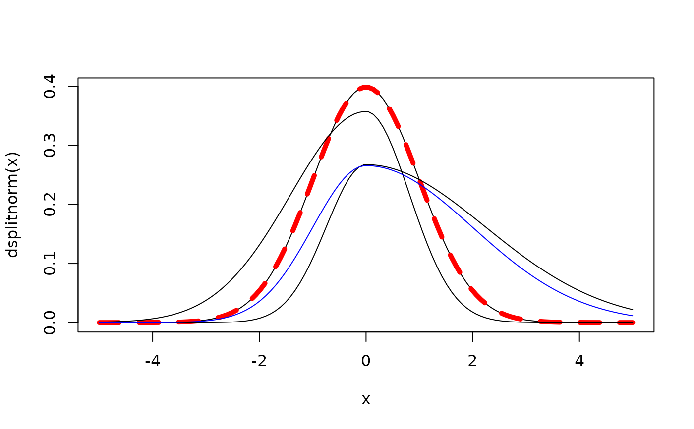
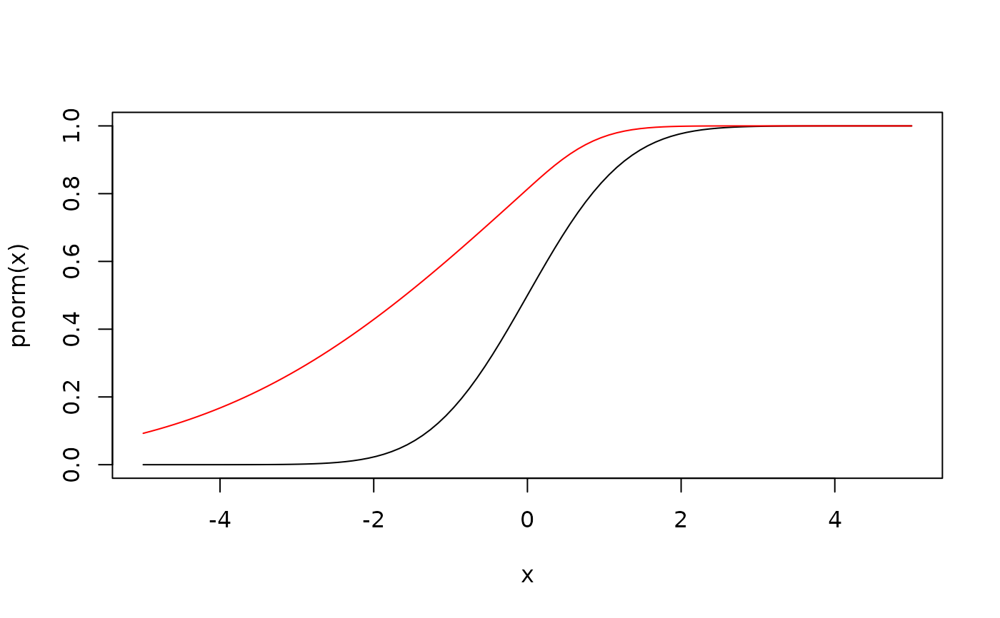
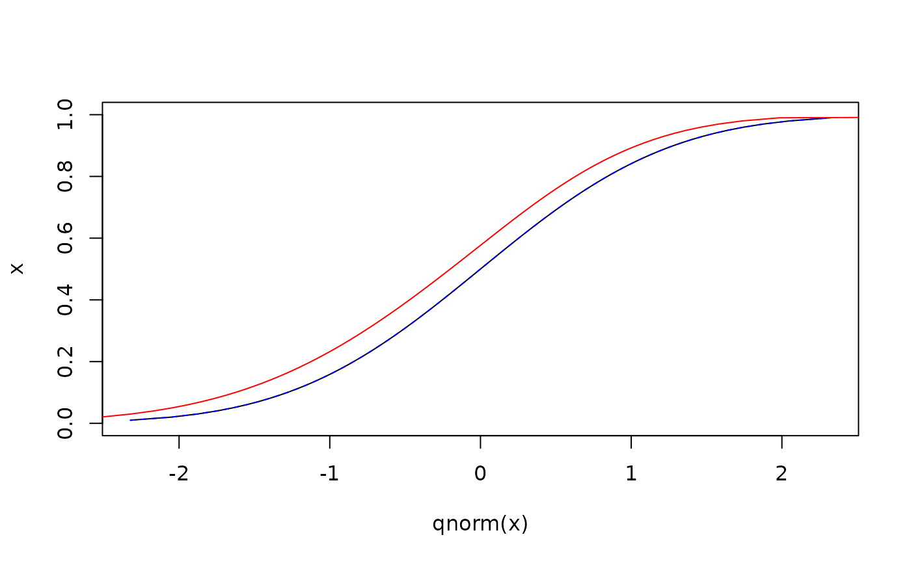
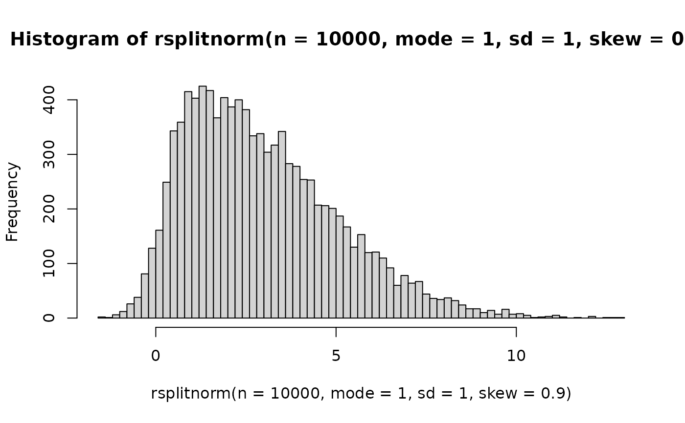

The Split Normal Distribution (or Two-Piece Normal Distribution)
Source:R/splitnorm.R
dsplitnorm.RdDensity, distribution function, quantile function and random generation for the split normal distribution.
Usage
dsplitnorm(x, mode = 0, sd = 1, skew = 0, sd1 = NULL, sd2 = NULL)
psplitnorm(x, mode = 0, sd = 1, skew = 0, sd1 = NULL, sd2 = NULL)
qsplitnorm(p, mode = 0, sd = 1, skew = 0, sd1 = NULL, sd2 = NULL)
rsplitnorm(n, mode = 0, sd = 1, skew = 0, sd1 = NULL, sd2 = NULL)Arguments
- x
Vector of quantiles (for dsplitnorm, psplitnorm).
- mode
Vector of modes.
- sd
Vector of uncertainty indicators.
- skew
Vector of inverse skewness indicators. Must range between -1 and 1.
- sd1
Vector of standard deviations for left-hand side.
NULLby default.- sd2
Vector of standard deviations for right-hand side.
NULLby default.- p
Vector of probabilities (for qsplitnorm).
- n
Number of observations required (for rsplitnorm).
Value
dsplitnorm gives the density, psplitnorm gives the distribution function,
qsplitnorm gives the quantile function, and rsplitnorm generates random deviates.
Details
If mode, sd or skew are not specified they assume the default
values of 0, 1 and 0, respectively. This results in identical values as those
obtained from a normal distribution.
The probability density function is: $$f(x; \mu, \sigma_1, \sigma_2) = \frac{\sqrt{2}}{\sqrt{\pi} (\sigma_1 + \sigma_2)} e^{-\frac{1}{2\sigma_1^2}(x - \mu)^2}$$ for \(-\infty < x < \mu\), and $$f(x; \mu, \sigma_1, \sigma_2) = \frac{\sqrt{2}}{\sqrt{\pi} (\sigma_1 + \sigma_2)} e^{-\frac{1}{2\sigma_2^2}(x - \mu)^2}$$ for \(\mu < x < \infty\).
If not specified (via sd1 and sd2), \(\sigma_1\) and \(\sigma_2\) are derived as:
$$\sigma_1 = \sigma / \sqrt{1 - \gamma}$$
$$\sigma_2 = \sigma / \sqrt{1 + \gamma}$$
where \(\sigma\) is the overall uncertainty indicator sd and \(\gamma\)
is the inverse skewness indicator skew.
Examples
x <- seq(-5, 5, length = 110)
plot(x, dsplitnorm(x), type = "l")
# compare to normal density
lines(x, dnorm(x), lty = 2, col = "red", lwd = 5)
# add positive skew
lines(x, dsplitnorm(x, mode = 0, sd = 1, skew = 0.8))
# add negative skew
lines(x, dsplitnorm(x, mode = 0, sd = 1, skew = -0.5))
# add left and right hand sd
lines(x, dsplitnorm(x, mode = 0, sd1 = 1, sd2 = 2), col = "blue")

# psplitnorm
x <- seq(-5, 5, length = 100)
plot(x, pnorm(x), type = "l")
lines(x, psplitnorm(x, skew = -0.9), col = "red")

# qsplitnorm
x <- seq(0, 1, length = 100)
plot(qnorm(x), type = "l", x)
lines(qsplitnorm(x), x, lty = 2, col = "blue")
lines(qsplitnorm(x, skew = -0.3), x, col = "red")

# rsplitnorm
hist(rsplitnorm(n = 10000, mode = 1, sd = 1, skew = 0.9), 100)
